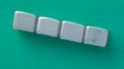

ヤフオクも最近は さっぱりご無沙汰。少し前、久しぶりで覗いたとき見つけたのがこの牌。パッと見で珍奇牌と思ったので、即落札した（指定価格で売り切りだった）。
見た目や重さ、そして磁石に反応しないところからから材質はジュラルミン（アルミニウムと銅の合金）と思われる。ジュラルミンは軽くて固いので、1920年代から1950年くらいの間、飛行機の材料としてよく使われた。
それだけのことでは どこで製作されたかハッキリしないが、σ(-_-)は1955年〜1965年くらいの間に、第１次インドシナ戦争でベトミンの捕虜となったフランス兵が製作したのではないかと思っている。というか、ヤフオクで写真を見たとき
そう思ったので落札した。
こういう牌の製造方法は門外漢のσ(-_-)には分からないが、ジュラルミンは比較的低温で溶解しやすい。そこで飛行機の胴体など溶かして型枠に流し込み、柔らかいうちに鉄筆などで彫刻したのかも。
もちろんどこで製作されたか分からない以上、日本か中国で作られた可能性もある。実際 第２次大戦後のモノが無い時代、日本でも手作り牌が盛んに作られた。日本で製造されたとすればその頃（昭和20年代（1945年〜1955））ということになるが、見たとおり 索子は笹の葉タイプ（逆重ね（MW)の８索デザインがいい）。
索子は中国でも竹タイプがメジャーで、笹の葉はマイナー。笹の葉タイプは日本へも流入したが、日本で製造されたのは竹タイプのみ。少なくともσ(-_-)は現物はもとより、日本で笹の葉タイプが製造されたことを伺わせる記述も見たことはない。
また字牌では白板に枠がある。白板に枠をつけるのは中国タイプの特徴。これも日本タイプではないことを示唆している。それに牌裏はカーブしているので、枠が無くても真っ平らな表面と区別できる。これくらいの区別差があれば、日本人は さらに見慣れない枠を付けてまで表裏をはっきりさせたりしないと思われ。

同じく第２次大戦後あたりの中国製という可能性もある。しかし牛骨の入手が比較的容易な中国で貴重な金属資源であるジュラルミンで牌を作るということは考えにくい。それに中国人が製造したなら、麻雀牌で「發」 を「発」と彫ることなないと思われる。
で1955年頃といえば、第１次インドシナ戦争が終結した頃。1954年５月、フランス軍はディエンビエンフーで壊滅、約１万人の将兵がベトミン軍の捕虜となった。10数年後 解放されるまで捕虜生活の無聊を慰めるためにこのような牌が製作された。下記は捕虜のフランス兵によって製造されたことがハッキリしているジュラルミン牌で、麻雀博物館に収蔵されている。
釈放されたフランス兵が記念に本国に持ち帰ったが、1997年死去した。その後 遺族が手放し、麻雀博物館の収蔵品となった。この博物館収蔵品を作ったフランス兵はおぼろげな記憶で作ったので、それぞれの模様をはじめ
發や萬子の漢字がかなり曖昧。

それに比べると、このベトナム プリズン牌の漢字はしっかりしている。ベトミン軍には中国とソ連の軍事顧問団がいたが、ひょっとして製造にあたって中国の軍事顧問団の指導を受けたのかも??。
あと可能性のあるのが、第二次インドシナ戦争で 同じくベトコンの捕虜になったアメリカ兵が製造したという状況。たしかにアメリカ軍も多くの将兵がベトコンの捕虜になった。しかしそれは単発的な戦闘においてのこと。こういう牌を作るには大勢の捕虜が安穏な状態で長期間捕虜生活をおくらなければならない。しかし第二次インドシナ戦争では１万どころか数千人のアメリカ兵が一度に捕虜になって長期間収容されていたという話の記憶はない。そこでこの牌がプリズン牌であるなら、やはり長期間収容されていたフランス兵によると思われる。
ピンヅは ４枚のうち１枚が、そして ４枚のうち１枚が、そして ４枚の上部の３つ丸が全部逆流れになっている。いや、 ４枚のうち、１枚だけ逆流れというのがすごいチャームポイント。（^-^； ４枚の上部の３つ丸が全部逆流れになっている。いや、 ４枚のうち、１枚だけ逆流れというのがすごいチャームポイント。（^-^；
よく見ると、染料は不明であるが万の字はすべて赤で塗色されていている（すでに かなり色が抜けている）。
赤の塗色は、このほか の羽根、 の羽根、 の真ん中、 の真ん中、 の先端、 の先端、 の中丸、 上部の３つ丸の先端の丸 、 の中丸、 上部の３つ丸の先端の丸 、 がヨコ列の３丸ではなくタテ列の３丸にほどこされている。う〜ん、“いい仕事”している。(^-^)V がヨコ列の３丸ではなくタテ列の３丸にほどこされている。う〜ん、“いい仕事”している。(^-^)V
同じくジェラルミン製のサイコロ（残念ながら１個しかない）。
というわけで歴史の１ページを象徴する牌と（勝手に思い込んで）いたく気に入っている。しかし年末ジャンボ３億円がかすりもしなかったので、今ならたった50万円で応相談。(笑)
|